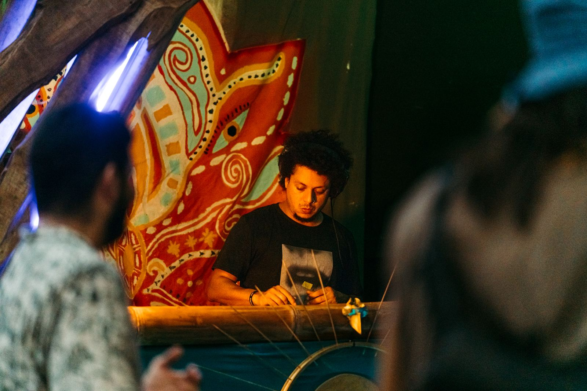

Festivals · Music
Dreamsea Sónica 2027
- Dates
- –
- Venue
- Dreamsea Surf Camp
- Location
- Tamarindo, Costa Rica
- Format
- In-person
- Category
- Music
- Industry
- Music
- Organiser
- Dreamsea Costa Rica with Ibiza Sonica
- Price
- From USD 44 on the official ticketing page (24 Nov 2026)
- Official website
- https://dreamseacostarica.com/dreamsea-sonica/
- Tickets
- https://starticket.cr/e/dreamsea-sonica-2027/9194
About
Costa Rica dates are local (Costa Rica time, UTC-6 all year, no daylight saving).
Topics: house, techno, electronic music.
No organiser attendance figure found on the official pages checked (24 Nov 2026). Ranked by an estimated size tier 'medium' (about 1,000-10,000 attendees; our judgement from format, venue and scale, not an official number).
Sources
- Official — https://dreamseacostarica.com/dreamsea-sonica/
- Official (organiser's ticketing page) — https://starticket.cr/e/dreamsea-sonica-2027/9194